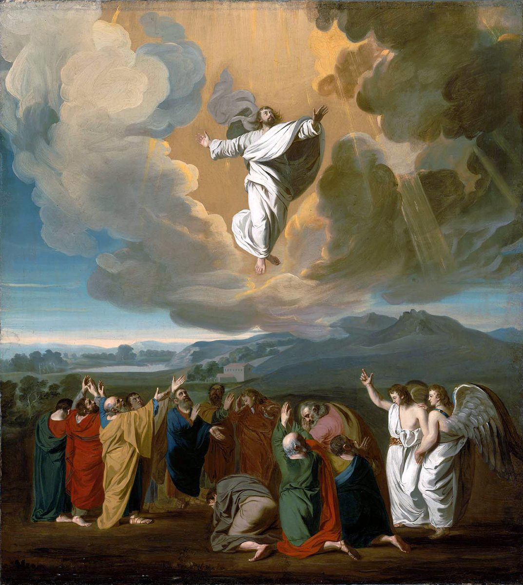

Ephesians 4 — The Mister Translation

⚠ Verses 8–10 read Psalm 68’s ‘going up on high’ as Christ’s; Acts tells the going up as a scene (Acts 1:9), and the two figures in white at the right are its ‘two men’ who ‘stood beside them in white clothing’ (1:10).

Translator’s Notes
“I, the prisoner in the Lord — to walk worthily of the calling.” The prisoner of 3:1 speaks again, “in the Lord” this time, and the “then” turns the letter from what God has done to how the readers are to live. “Walk” is peripateō, the word of 2:2, “in which you once walked,” and of 2:10, “so that we should walk in them”; “the calling” is the “hope of his calling” of Ephesians 1:18. The KJV reads “the prisoner of the Lord”; the ASV reads “the prisoner in the Lord”; the NIV reads “As a prisoner for the Lord.”
“With all humility and gentleness, with patience.” Tapeinophrosynē, “humility,” lowliness of mind, stands in seven verses of the New Testament; at Acts 20:19 Paul served “with all humility and tears” (dictionary). “Gentleness” and “patience” are two of the names of the fruit of the Spirit at Galatians 5:22–23. Anechomai, “bearing with,” is putting up with another person, not merely liking them. The KJV reads “With all lowliness and meekness, with longsuffering, forbearing one another in love”; the NWT 1984 reads “with complete lowliness of mind and mildness.”
“The unity of the Spirit in the bond of peace.” Henotēs, “unity,” stands in two verses of the New Testament, both in this chapter: here, the unity of the Spirit to be kept, and v13, the unity of the faith to be reached. The peace is the peace of 2:14, Christ who “is our peace, who made the two one”; syndesmos, “bond,” is the tie that holds them. The KJV reads “Endeavouring to keep the unity of the Spirit in the bond of peace”; the NIV reads “Make every effort to keep the unity of the Spirit through the bond of peace.”
⚠ “One body and one Spirit … one God and Father of all.” Seven times “one”: body, Spirit, hope, Lord, faith, baptism, God. Behind it stands the confession of Deuteronomy 6:4, “Jehovah our God, Jehovah is one,” as Paul reshaped it at 1 Corinthians 8:6, “one God, the Father … and one Lord, Jesus Christ,” and 1 Corinthians 12:13, “in one Spirit we were all baptized into one body.” Which baptism the “one baptism” means, in water or in the Spirit, is argued; the verse does not say. “Over all and through all and in all” can mean all people or all things; the NWT 1984 supplies “Father of all [persons].” The Byzantine text adds “us” and the Received Text “you”: the Douay reads “in us all,” the KJV “in you all.”
“According to the measure of the gift of Christ.” One body, but not one gift: grace given “to each one,” as at Romans 12:6, “gifts that differ according to the grace given to us.” “The gift” is the dōrea of 3:7, “the gift of the grace of God.” The KJV reads “according to the measure of the gift of Christ”; the NIV reads “as Christ apportioned it.”
⚠ “He took captivity captive; he gave gifts to men” — Psalm 68, with one word changed. The quotation is Psalm 68:18 (68:19 in the Hebrew numbering), a song of God going up in victory: “You went up to the height, you took captivity captive, you received gifts among humankind.” The Hebrew has lakachta, “you received,” and the Greek Old Testament has the same, elabes. Paul has edōken, “he gave.” Readers explain the change in different ways: that the conqueror who receives tribute distributes it, as at Acts 2:33, where the exalted Christ, “having received from the Father the promise of the Holy Spirit, has poured out this”; or that Paul knew a reading of the psalm with “gave,” since the Aramaic Targum of the Psalms is reported to read “you gave gifts to the sons of men,” of Moses going up Sinai to receive the law and give it to Israel. This page sets the readings out. The cognate pair “took captivity captive” is the Hebrew’s own, shavita shevi. The KJV reads “he led captivity captive, and gave gifts unto men”; the NWT 1984 reads “he gave gifts [in] men,” its bracket keeping the psalm’s wording; the NIV reads “gave gifts to his people.”
⚠ “He also went down into the lower parts of the earth.” If he went up, he first came down: so John 3:13, “no one has gone up into heaven except the one who came down out of heaven.” Where he went down is read three ways. The lower parts may be the world of the dead, as at Romans 10:7, “Who will go down into the abyss?”, and the verse has been read among those behind the creed’s “he descended into hell.” They may be the earth itself, “the lower parts, that is, the earth,” the coming of the Son in the flesh. Or they may be the coming down of Christ in the Spirit after his ascension. This page does not choose. The Byzantine text adds “first,” so the KJV reads “he also descended first into the lower parts of the earth”; the NWT 1984 reads “the lower regions, that is, the earth”; the NIV reads “to the lower, earthly regions.”
“Far above all the heavens, so that he might fill all things.” “Far above” is the hyperanō of Ephesians 1:21, “far above every rule and authority,” and “fill all things” recalls Ephesians 1:23, “the fullness of the one who fills all things in all.” The KJV reads “that he might fill all things”; the NWT 1984 reads “that he might give fullness to all things.”
⚠ “Apostles … prophets … evangelists … shepherds and teachers.” The gifts of v8 turn out to be people. The apostles and prophets are the foundation of Ephesians 2:20 and the list at 1 Corinthians 12:28, “first apostles, second prophets, third teachers.” Euangelistēs, “evangelist,” stands in three verses of the New Testament: “Philip the evangelist” at Acts 21:8, this one, and 2 Timothy 4:5. Poimēn is “shepherd,” the word of “I am the good shepherd” (John 10:11); “pastor” is the Latin for it (dictionary). “Shepherds and teachers” share one article in Greek, and whether they are one group with two tasks or two groups is argued. The KJV reads “and some, pastors and teachers”; the NWT 1984 reads “some as shepherds and teachers”; the Douay reads “and other some pastors and doctors.”
⚠ “For the equipping of the holy ones for the work of service” — and a comma. Katartismos stands in one verse of the New Testament, this one; it is the noun of katartizō, the verb this translation prints “mend” at Galatians 6:1 and Mark 1:19 (dictionary). How the three phrases join is argued. Read as three parallel aims, the leaders do the equipping, the service and the building: the KJV, “For the perfecting of the saints, for the work of the ministry, for the edifying of the body of Christ.” Read as a chain, the leaders equip the holy ones, and the holy ones do the service: the NIV, “to equip his people for works of service, so that the body of Christ may be built up.” The question has been tied up with debates over clergy and laity, and this page does not settle it. The Geneva reads “For the repairing of the Saints”; the NWT 1984 reads “the readjustment of the holy ones.”
“A mature man … the measure of the stature of the fullness of Christ.” Teleios is complete, full-grown, the opposite of the “infants” of the next verse (dictionary). Hēlikia can be stature or age (dictionary). The KJV reads “unto a perfect man, unto the measure of the stature of the fulness of Christ”; the ASV reads “unto a fullgrown man”; the Douay reads “unto the measure of the age of the fulness of Christ.”
⚠ “Tossed by the waves … by the dice-playing of men.” Kybeia, from kybos, a cube or die, stands in one verse of the New Testament, this one: the sleight of a gambler with loaded dice (dictionary). Klydōnizomai, “tossed by the waves,” stands in one verse, this one; its noun is the “wave of the sea, driven by the wind” of James 1:6. Methodeia, “scheming,” the word behind “method,” stands in two verses, here and 6:11. The KJV reads “by the sleight of men, and cunning craftiness, whereby they lie in wait to deceive”; the NWT 1984 reads “by means of the trickery of men.”
“Speaking the truth in love … fitted together.” Alētheuō stands in two verses of the New Testament: Galatians 4:16, “by telling you the truth,” and this one. It can be speaking the truth or holding to it; the Douay reads “doing the truth in charity” and the Geneva “let us follow the truth in love.” Synarmologeō, “fitted together,” stands in two verses, both in this letter: the building of Ephesians 2:21 and the body here. The head is the head of Ephesians 1:22. The KJV reads “fitly joined together and compacted by that which every joint supplieth.”
“The futility of their mind … the hardening of their heart.” Mataiotēs, “futility,” stands in three verses of the New Testament: Romans 8:20, “the creation was subjected to futility,” this one, and 2 Peter 2:18; Romans 1:21 gives the same picture, “futile in their reasonings, and their uncomprehending heart was darkened.” “Alienated” is the word of Ephesians 2:12, “alienated from the citizenship of Israel.” Pōrōsis, “hardening,” stands in three verses: Mark 3:5, where Jesus is “grieved together with them at the hardening of their heart”; Romans 11:25, “a hardening in part has happened to Israel”; and this one (dictionary). The KJV and the Douay read “because of the blindness of their heart”; the ASV reads “because of the hardening of their heart.”
“Having grown callous.” Apalgeō, to stop feeling pain, stands in one verse of the New Testament, this one: the numbness that lets a person give himself over without a pang. “Sensuality” and “impurity” are two of the words of 2 Corinthians 12:21; pleonexia is greed, wanting always more. The KJV reads “Who being past feeling have given themselves over unto lasciviousness”; the NWT 1984 reads “Having come to be past all moral sense”; the Douay reads “Who despairing,” following the Vulgate.
“You did not learn Christ that way … as truth is in Jesus.” They learned a person, not only a teaching: emathete ton Christon, “you learned the Christ.” The KJV reads “But ye have not so learned Christ”; the NWT 1984 reads “But YOU did not learn the Christ to be so”; the TLB reads “But that isn’t the way Christ taught you!”
⚠ “Put off … the old man … put on the new man.” The language is of clothing: taking off and putting on, as at Romans 13:12, “let us throw off the works of darkness, and let us put on the armor of light,” and Galatians 3:27, “have put on Christ.” “Our old man was crucified with him” at Romans 6:6; the “new man” is the “one new man” of Ephesians 2:15. “Created according to God” recalls Genesis 1:27, “in the image of God he created him.” The three infinitives can give what the readers were taught, as the NIV takes them, “You were taught … to put off your old self,” or what they are now told to do, as the KJV, “That ye put off … the old man.” The NWT 1984 prints “the old personality” and “the new personality,” and for “the spirit of your mind” it prints “the force actuating YOUR mind,” in line with its view of spirit.
“Speak truth each one with his neighbor.” The words are Zechariah 8:16, “speak the truth, each to his neighbor,” and the Greek Old Testament’s wording matches Paul’s but for one preposition, pros, “to,” where Paul has meta, “with.” The reason is the body: “members of one another,” as at Romans 12:5. The KJV reads “speak every man truth with his neighbour: for we are members one of another”; the NIV reads “for we are all members of one body.”
⚠ “Be angry and do not sin” — Psalm 4, in Greek. The words are Psalm 4:4 (4:5 in the Hebrew numbering), word for word as the Greek Old Testament has them, orgizesthe kai mē hamartanete. The Hebrew is rigzu, “tremble” or “be stirred,” which can be fear as well as anger. Whether Paul commands anger or allows it and limits it is read both ways; the NIV takes it as a limit, “In your anger do not sin.” Parorgismos, “provocation,” a stirred-up exasperation, stands in one verse of the New Testament, this one (dictionary). The KJV reads “Be ye angry, and sin not: let not the sun go down upon your wrath”; the NWT 1984 reads “let the sun not set with YOU in a provoked state.” “Place” for the devil is room to stand, a foothold, as the NIV puts it, “do not give the devil a foothold” (dictionary).
“Let the one who steals steal no longer … to share with the one in need.” The purpose of work is turned outward: not only to stop taking but to have something to give. “With his own hands” is how Paul describes himself at 1 Corinthians 4:12, “We wear ourselves out working with our own hands.” The KJV reads “Let him that stole steal no more: but rather let him labour”; the NWT 1984 reads “Let the stealer steal no more.”
“No rotten word.” Sapros, “rotten,” stands in six verses of the New Testament: the rotten tree and its fruit at Matthew 7:17, 7:18, 12:33 and Luke 6:43, the bad fish thrown out at Matthew 13:48, and this one (dictionary). The good word “gives grace,” charis, to those who hear. The KJV reads “Let no corrupt communication proceed out of your mouth”; the NWT 1984 reads “Let a rotten saying not proceed out of YOUR mouth.”
⚠ “Do not grieve the Holy Spirit of God.” The words recall Isaiah 63:10, “they rebelled and grieved his holy spirit,” where the Hebrew has ’itstsevu, “grieved,” and the Greek Old Testament parōxynan, “provoked”; Paul’s lypeite, “grieve,” stands nearer the Hebrew. A Spirit who can be grieved is spoken of in personal terms. “Sealed” and “redemption” are the words of Ephesians 1:13 and 1:14. The KJV reads “And grieve not the holy Spirit of God, whereby ye are sealed unto the day of redemption”; the NWT 1984 reads “do not be grieving God’s holy spirit,” lower case as throughout.
“Tenderhearted, freely forgiving each other.” Eusplanchnos, “tenderhearted,” from splanchna, the inward parts, stands in two verses: this one and 1 Peter 3:8. Charizomai, “freely forgive,” is built on charis, grace, the word of Luke 7:42, “he freely forgave them both” (dictionary). The list before it ends with blasphēmia, slander, which in Greek is not only speech against God. The KJV reads “even as God for Christ’s sake hath forgiven you”; the NWT 1984 reads “freely forgiving one another just as God also by Christ freely forgave YOU.”
Patterns worth carrying forward
Where this translation keeps the exact words: “walk” for peripateō, as at 2:2 and 2:10; “humility,” as at Acts 20:19; “gentleness” and “patience,” as at Galatians 5:22–23; “one” seven times; “took captivity captive,” the cognate pair of Psalm 68; “went up” and “went down,” as at Romans 10:6–7; “shepherds” for poimenas; “dice-playing” for kybeia; “fitted together,” as at 2:21; “futility,” as at Romans 8:20; “the hardening of their heart,” as at Mark 3:5; “the old man” and “the new man,” as at Romans 6:6 and 2:15; “members of one another,” as at Romans 12:5; “rotten,” as at Luke 6:43; and “freely forgave,” as at Luke 7:42.
Echoes paid. The prisoner “in the Lord” planted at 3:1; the walk of 2:2 and 2:10; the calling and its hope from Ephesians 1:18; the peace that made the two one, 2:14; the apostles and prophets of 2:20; far above and fill all things from Ephesians 1:21 and 1:23; the head of Ephesians 1:22; fitted together from 2:21; alienated from 2:12; the new man of 2:15; and sealed for redemption from Ephesians 1:13 and 1:14.
Echoes planted. The scheming of the devil at 6:11; the walk again at 5:2, 5:8 and 5:15; the body and its head in the marriage passage of 5:23; and Psalm 68, Psalm 4, Zechariah 8 and Isaiah 63, each in its own chapter.
Next in this letter: Ephesians 5, already on these pages. Imitators of God, children of light, “Awake, sleeper,” and husbands and wives as a picture of Christ and the congregation.